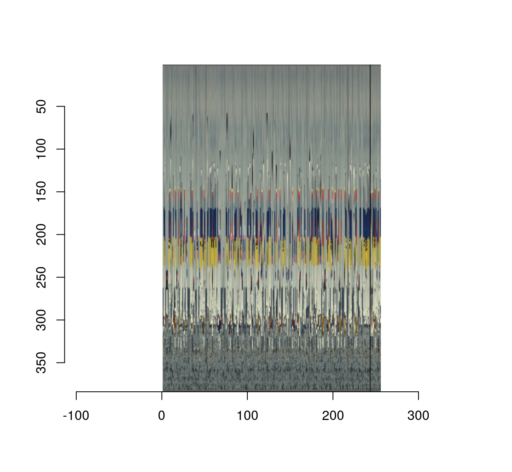
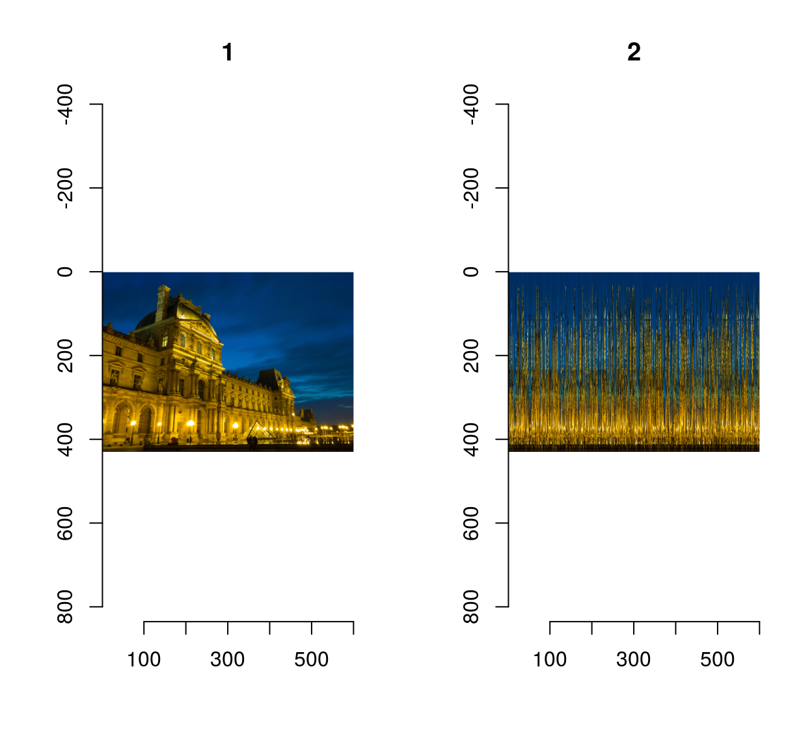
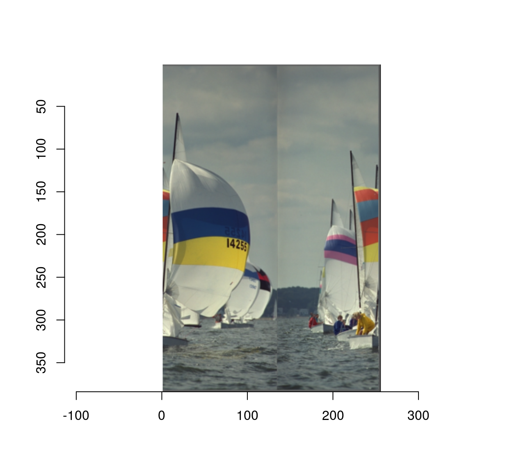
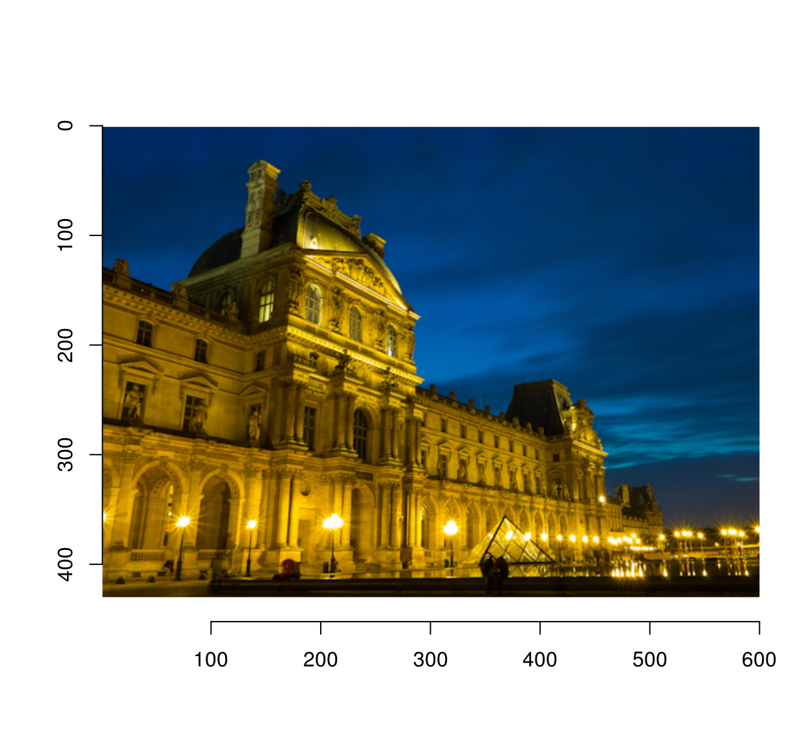
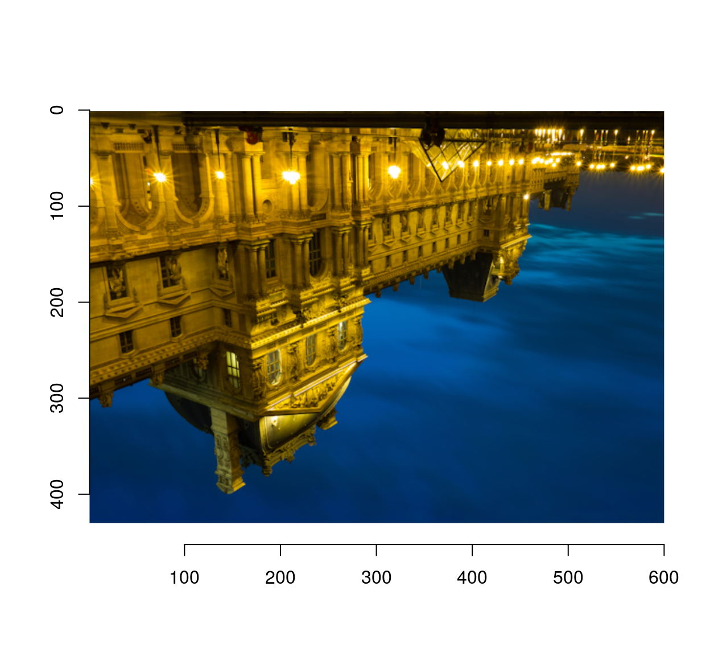

Unshuffling an image
Simon Barthelmé (GIPSA-lab, CNRS)
This note is inspired by Robin Houston’s image unshredding demo. I’ll show how imager and the seriation package let you do the same thing in about 5 lines of R code.
The goal is to reconstruct an image whose columns have been scrambled. The scrambling is easy enough to implement:
library(imager)
library(purrr)
set.seed(2)
##reorder the columns of an image
scramble <- function(im)
{
imsplit(im,"x") %>% { .[sample(length(.))] } %>% imappend("x")
}
scramble(boats) %>% plot
We can test it on Robin’s demo image (CC licensed by Falcon® Photography), a picture of the Louvre at night.
im <- load.image("https://camo.githubusercontent.com/7d413e9a343e8ceaa507d68a1a6e93247d5f7853/68747470733a2f2f726f62696e686f7573746f6e2e6769746875622e696f2f696d6167652d756e736872656464696e672f696d616765732f6f726967696e616c2f626c75652d686f75722d70617269732e706e67")
imlist(im,scramble(im)) %>% plot(layout="row")
The unshuffling relies on the spatial structure of images: adjacent columns tend to be similar. If we compute a distance matrix that compare all pairs of rows, we should be able to pick out an order that minimises the total distance. That’s a seriation problem, and R has a whole package dedicated to seriation. There are many was of solving seriation problems (see the package’s vignette), and one of them is to cast seriation as an instance of the Traveling Salesman Problem, as Robin does. In this case it works wonders and is trivially easy to implement :
library(seriation)
unscramble <- function(im.s,method="TSP",...)
{
cols <- imsplit(im.s,"x")
#Compute a distance matrix (using L1 - Manhattan - distance)
#Each entry D_ij compares column i to column j
D <- map(cols,as.vector) %>% do.call(rbind,.) %>% dist(method="manhattan")
out <- seriate(D,method=method,...)
cols[get_order(out)] %>% imappend("x")
}
scramble(boats) %>% unscramble %>% plot(main="Unscrambled image")
Almost correct, but the TSP solver probably hit a local minimum there.
On Robin’s example we get:
im.s <- load.image("https://camo.githubusercontent.com/30709185ecac2da439ff5e2b8327906fcc43c4b0/68747470733a2f2f726f62696e686f7573746f6e2e6769746875622e696f2f696d6167652d756e736872656464696e672f696d616765732f73687566666c65642f626c75652d686f75722d70617269732e706e67")
out <- unscramble(im.s)
plot(out)
#Load Robin's output image and compare
check <- load.image("https://camo.githubusercontent.com/2011433d1be1f1895c8dd3d2b74e9d7b57ba29f1/68747470733a2f2f726f62696e686f7573746f6e2e6769746875622e696f2f696d6167652d756e736872656464696e672f696d616765732f73616e67616c696e652f626c75652d686f75722d70617269732e706e67")
#get rid of alpha channel
check <- imsub(check,cc < 4)
mean(abs(out-im))## [1] 0mean(abs(check-im))## [1] 0.003633105Turns out we’re doing even a wee bit better (surprisingly, since the TSP solver used is probably poorer).
The double scramble (rows then columns) is an easy generalisation away:
scramble <- function(im,axis="x")
{
imsplit(im,axis) %>% { .[sample(length(.))] } %>% imappend(axis)
}
unscramble <- function(im.s,axis="x",method="TSP",...)
{
cols <- imsplit(im.s,axis)
#Compute a distance matrix (using L1 - Manhattan - distance)
#Each entry D_ij compares column i to column j
D <- map(cols,as.vector) %>% do.call(rbind,.) %>% dist(method="manhattan")
out <- seriate(D,method=method,...)
cols[get_order(out)] %>% imappend(axis)
}
im.s <- scramble(im,"x") %>% scramble("y")
#The double scramble produces an unrecognisable mess
plot(im.s)
#Incredibly enough, we can invert it:
unscramble(im.s,"y") %>% unscramble("x") %>% plot